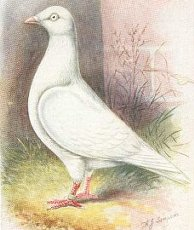
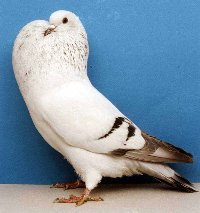
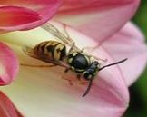

Thursday, March the 25th, 2004
back to: title, date or indexes
“Vermin with wings” was the memorable phrase used by newt-fancying Mayor of London Ken Livingstone to describe pigeons. He has a point. Sometimes it seems as if nowhere in our capital city is free from pigeon shit. They're grubby birds. Even the supposedly healthy ones look disease-ridden. And that eerie, unholy noise they make—the soundtrack to nightmares. I know otherwise saintly people—Francis of Assisis in the making—who would gladly bludgeon, stamp on, or maim pigeons to make the world a better place. Well.
My theory is that our attitude to Ken's “vermin” has a lot to do with the associations—such as those above—which crowd our heads when we hear the word “pigeon”. Our ability to take an objective view of the birds is lost. Just as we would find it difficult to maintain an air of suave politeness if introduced to a woman, only to learn that her first name was Condoleezza, we cannot escape the involuntary, Lovecraftian shudderings elicited by certain words and names.
There is a way forward, if we are prepared—in this instance—to approach ornithological taxonomy with a devil-may-care looseness. Some breeds of pigeon have lovely names. Ever since I began to think of these shit-riddled birds as cumulets, my heart swells with pangs of joy at the sight of them, which is as it should be on this miraculous and lovely planet. And who—apart from the likes of Condoleezza Rice—could fail to have tender feelings towards a Czech ice pouter?

Left, Cumulet. Centre, Czech ice pouter. Right, Terrifying giant bee (one of a swarm, not shown).